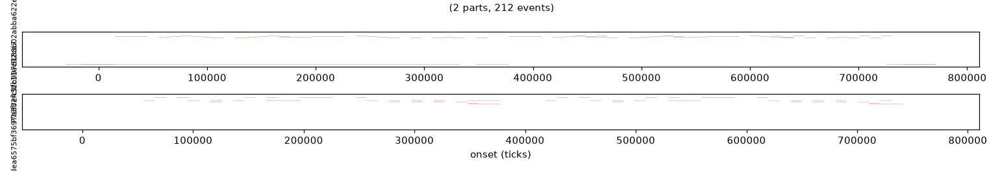

Clinton St
13 bars · C major · Long Meter Double · a tune by Philip D. Allen,
encoded as clinton-st.ru in the Rubato format.
Score

Piano-roll score (two parts), rendered from the decoded container.
Audio
Sine stand-in render (tools/muse_play). The VSCO 2 CE
sample tier (tools/muse_sample) is the intended take but needs CDN
read access, which was unavailable when this page was built.
Fidelity
| Check | Result |
|---|---|
| Pitched notes in source | 196 (2 parts) |
| Rests in source | 16 |
| Pitched notes after decode | 196 (2 parts) |
| Round-trip recall / precision | 1.0 / 1.0 |
| Container size | 1,608 bytes |
Reproduce with python3 artifacts/clinton-st/build.py.
Vision note (draft — owner's edit)
Clinton St is the first finished piece in the Rubato format: a 13-bar tune in C major, Long Meter Double, carried end to end through the pipeline rather than described by it. The format closes — the tune encodes to a 1,608-byte container and decodes back note-for-note (196 pitched notes, 16 rests) — and it is the owner's own work: a human tune in a machine format, which is the point.
Full draft: artifacts/clinton-st/vision-note.md.
Staging status
This page is not yet on the CDN. Two things are required, both
blocked by the CDN credential: the worker serves no /proof/ route
(only /workbench/ /audio/ /explorer/ /boardroom/), so a route must be
added and the worker redeployed; and the page plus its score and audio must be
uploaded to R2. See issue #443.